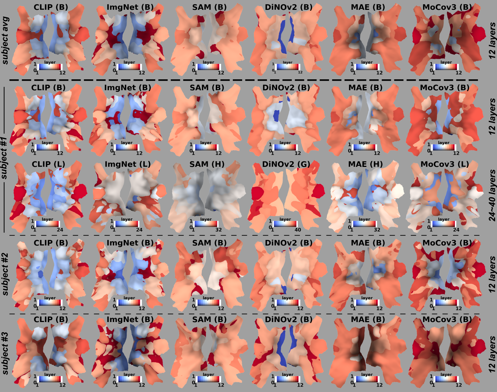
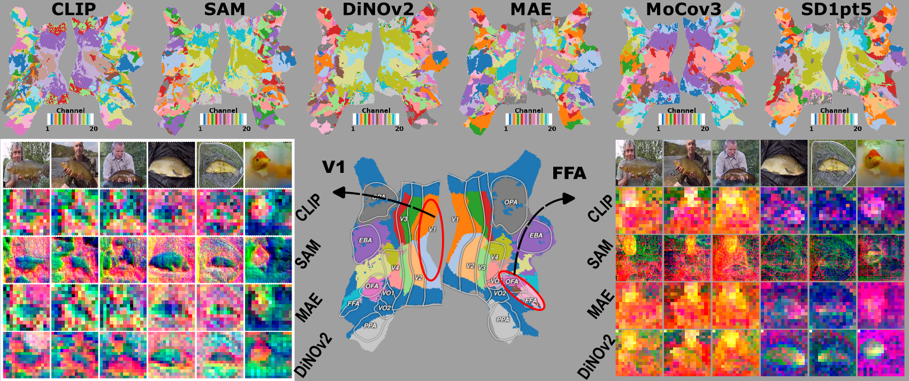

Brain Decodes Deep Nets
Huzheng Yang James Gee* Jianbo Shi*
University of Pennsylvania
*: co-advise
Main Story
Visualize pre-trained vision models by mapping model onto the brain.
Neuroscience Background
Visual brain is organized into regions, each region has specialized functions. For example, V1 does edge-detection and orientation filtering. FFA is face selective - if there's a face, neurons in FFA fire.
In the brain, image processing and feature computation are organized in a hierarchical and largely feed-forward fashion. V1 is the initial visual region that physically connected to input from the eyes. Representation in the brain become increasingly abstract from V1 onwards to other regions.

Visualization (Brain-to-Network Alignment) is a by-product of brain encoding model, each brain voxel selects:
- "which layer best predicts my brain response?"
- "which space best predicts my brain response?"
- "which scale best predicts my brain response?"
- "which channel best predicts my brain response?"

The intuitive understanding for our visualization is: each brain voxel asks the question, "which network layer/space/scale/channel best predicts my brain response?".
Methods
Brain encoding model over-simplified:
- input image, extract features from pre-trained deep nets
- feature selection for each brain voxel
- linear regression on selected features, output each brain voxel

Results

